MVA-plikt, også kalt momsplikt, er den juridiske forpliktelsen som pålegger bedrifter og organisasjoner å registrere seg for, beregne, kreve inn og betale merverdiavgift til norske skattemyndigheter. Dette er en sentral del av det norske skattesystemet som sikrer statens inntekter og regulerer økonomisk aktivitet.
For en grunnleggende innføring i selve Merverdiavgift, se vår omfattende guide.
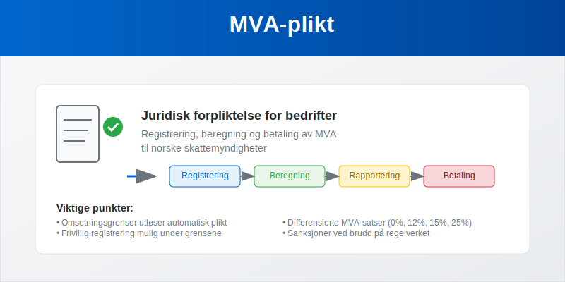
Hva Innebærer MVA-plikt?
MVA-plikt omfatter flere juridiske forpliktelser som virksomheter må oppfylle:
- Registreringsplikt når omsetningsgrenser overskrides
- Beregningsplikt for korrekt MVA på alle transaksjoner
- Innkrevingsplikt fra kunder ved salg
- Rapporteringsplikt gjennom periodiske MVA-oppgaver
- Betalingsplikt til Skatteetaten innen frister
- Dokumentasjonsplikt for alle MVA-relaterte transaksjoner
Denne plikten er lovpålagt og regulert gjennom merverdiavgiftsloven, som definerer hvem som er omfattet, hvilke unntak som gjelder, og hvilke konsekvenser brudd på plikten medfører.
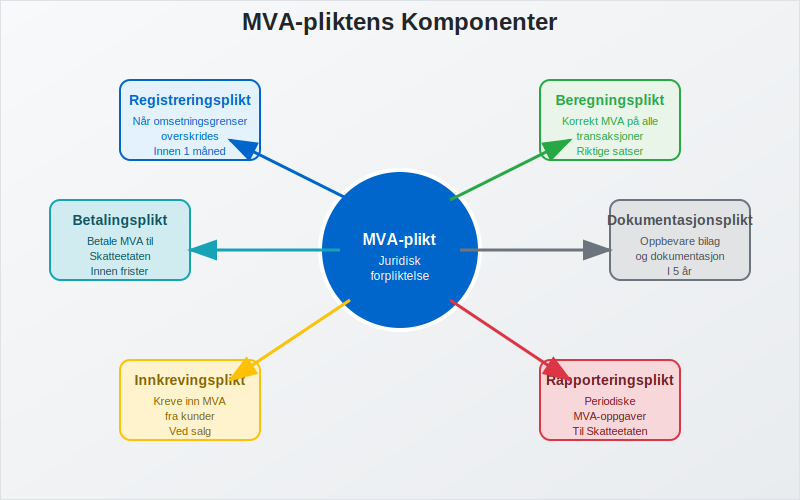
For mer om hvordan inngående MVA fordeles når virksomheten har både avgiftspliktige og avgiftsfrie omsetninger, se Forholdsmessig MVA.
For en nærmere gjennomgang av regler ved videresalg av varer på vegne av andre, se også Medsalgsplikt.
Hvem Har MVA-plikt?
Automatisk MVA-plikt
Følgende virksomheter får automatisk MVA-plikt når de når omsetningsgrensene:
| Virksomhetstype | Omsetningsgrense | Registreringsfrist |
|---|---|---|
| Alminnelig næring | 50 000 kr | Innen 1 måned |
| Primærnæring | 70 000 kr | Innen 1 måned |
| Enkeltpersonforetak | 50 000 kr | Innen 1 måned |
| Aksjeselskap | 50 000 kr | Innen 1 måned |
| Ideelle organisasjoner | 140 000 kr | Innen 1 måned |
Frivillig MVA-plikt
Virksomheter under omsetningsgrensene kan velge MVA-plikt hvis:
- De har betydelige fradragsberettigede kostnader
- De planlegger rask vekst mot omsetningsgrensen
- De ønsker å fremstå profesjonelt overfor kunder
- De handler primært med andre MVA-registrerte virksomheter
Unntak fra MVA-plikt
Visse aktiviteter er fritatt fra MVA-plikt uavhengig av omsetning:
- Finansielle tjenester (bank, forsikring, verdipapir)
- Helse- og sosialtjenester (leger, tannleger, fysioterapeuter)
- Undervisning (skoler, universiteter, kursvirksomhet)
- Utleie av boliger til private
- Ideelle aktiviteter under visse betingelser

Registrering for MVA-plikt
Registreringsprosessen
Trinn 1: Vurdering av plikt
- Beregn årlig omsetning basert på siste 12 måneder
- Identifiser virksomhetstype og relevant omsetningsgrense
- Vurder om aktiviteten er MVA-pliktig eller fritatt
Trinn 2: Søknad om registrering
- Søk via Altinn eller direkte til Skatteetaten
- Oppgi organisasjonsnummer (søk om dette først hvis nødvendig)
- Beskriv virksomhetens aktiviteter detaljert
- Angi forventet omsetning og MVA-grunnlag
Trinn 3: Godkjenning og oppstart
- Motta MVA-nummer fra Skatteetaten
- Få tildelt rapporteringsperiode basert på omsetning
- Start MVA-registrering i regnskapssystemet
- Implementer rutiner for MVA-håndtering
Nødvendig Dokumentasjon
- Organisasjonsnummer eller søknad om dette
- Firmaattest fra Brønnøysundregistrene
- Beskrivelse av virksomheten og hovedaktiviteter
- Budsjett eller prognoser for omsetning
- Regnskapsopplysninger hvis virksomheten er etablert
- Fullmakt hvis andre søker på vegne av virksomheten
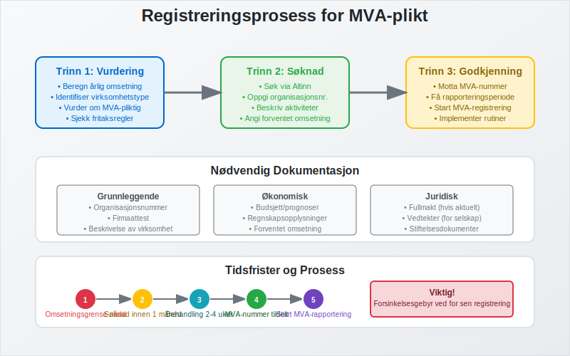
Beregning og Håndtering av MVA
MVA-satser og Anvendelse
Norge opererer med differensierte MVA-satser basert på type vare eller tjeneste:
| Sats | Anvendelsesområde | Typiske Eksempler |
|---|---|---|
| 25% | Alminnelig sats | Klær, elektronikk, tjenester |
| 15% | Næringsmidler | Mat, ikke-alkoholiske drikkevarer |
| 12% | Redusert sats | Transport, hotell, kino |
| 0% | Nullsats | Bøker, aviser, eksport |
| Fritatt | Ingen MVA | Helse, utdanning, finans |
Praktisk MVA-beregning
Utgående MVA (på salg):
Utgående MVA = Salgspris × MVA-sats ÷ (100 + MVA-sats)
Eksempel med 25% MVA:
- Salgspris inkl. MVA: 1 250 kr
- Utgående MVA: 1 250 × 25 ÷ 125 = 250 kr
- Salgspris ekskl. MVA: 1 000 kr
Inngående MVA (på kjøp):
Inngående MVA = Kjøpspris × MVA-sats ÷ (100 + MVA-sats)
Eksempel med 25% MVA:
- Kjøpspris inkl. MVA: 625 kr
- Inngående MVA: 625 × 25 ÷ 125 = 125 kr
- Kjøpspris ekskl. MVA: 500 kr
Netto MVA til betaling:
Netto MVA = Utgående MVA - Inngående MVA
Eksempel: 250 kr - 125 kr = 125 kr til betaling
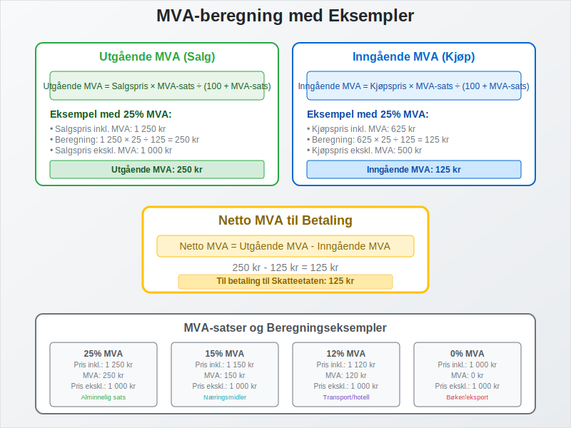
Fradragsrett og Begrensninger
Generelle Fradragsregler
Full fradragsrett gjelder for:
- Råvarer og handelsvarer til videresalg
- Driftsmidler som maskiner, verktøy, inventar
- Tjenester til virksomheten (regnskap, juridisk, markedsføring)
- Driftskostnader som strøm, telefon, husleie til næring
- Transport i forbindelse med virksomheten
Ingen fradragsrett for:
- Private utgifter og blandet bruk uten dokumentert fordeling
- Representasjon over lovlige grenser
- Personbiler (med visse unntak for varebiler)
- Kjøp til fritatte aktiviteter
- Alkohol og tobakk til representasjon
Spesielle Fradragssituasjoner
Delvis fradragsrett:
- Blandet bruk privat/næring krever dokumentert fordeling
- Hjemmekontor kan gi delvis fradrag basert på areal
- Firmabil med privat bruk har spesielle regler
Justeringsregler:
- Investeringer over 100 000 kr kan kreve justering over tid
- Endret bruk av eiendeler kan utløse justeringsplikt
- Salg av driftsmidler kan kreve MVA-justering
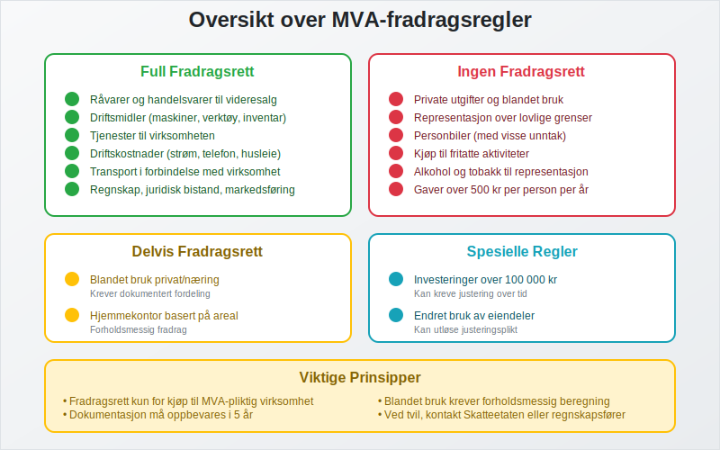
Rapportering og Oppgjør
Rapporteringsperioder
Rapporteringsfrekvensen avhenger av årlig omsetning:
| Årlig Omsetning | Rapporteringsperiode | Leveringsfrist |
|---|---|---|
| Under 1 mill. kr | Årlig | 31. januar |
| 1-5 mill. kr | Hver 2. måned | 10. i måneden etter |
| Over 5 mill. kr | Månedlig | 10. i måneden etter |
| Over 17 mill. kr | Månedlig | 10. i måneden etter |
Innhold i MVA-oppgaven
Obligatoriske opplysninger:
- Utgående MVA spesifisert per sats og kode
- Inngående MVA som kan fradras
- Netto MVA til betaling eller tilbakebetaling
- Omsetning per MVA-kode og sats
- Kjøp med fradragsberettiget MVA
- Justeringer og korrigeringer fra tidligere perioder
Tilleggsopplysninger ved behov:
- Import og eksport av varer
- Tjenester til og fra utlandet
- Investeringer i varige driftsmidler
- Spesielle transaksjoner som krever særskilt rapportering
Betaling og Oppgjør
Betalingsmetoder:
- Automatisk trekk fra registrert bankkonto (anbefalt)
- Manuell betaling via nettbank eller bank
- Avtalegiro for regelmessige betalinger
Betalingsfrister:
- Samme dato som leveringsfristen for MVA-oppgaven
- Forsinkelsesgebyr ved for sen betaling (1% per påbegynt måned)
- Tilleggsavgift ved uriktige opplysninger (20-60%)
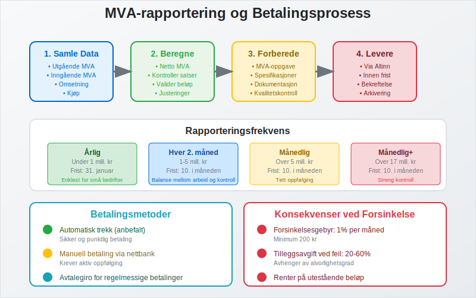
Regnskapsføring av MVA-plikt
Kontoplan for MVA
Balanseposter:
- 2700 - Utgående merverdiavgift (kortsiktig gjeld)
- 2701 - Inngående merverdiavgift (kortsiktig fordring)
- 2740 - Oppgjørskonto for MVA (netto posisjon)
Resultatposter:
- MVA påvirker ikke resultatet direkte
- Kun kontantstrømeffekten påvirker likviditeten
Praktiske Bokføringseksempler
Ved salg med 25% MVA:
Debet: Kundefordringer 1 250 kr
Kredit: Salgsinntekt 1 000 kr
Kredit: Utgående MVA (2700) 250 kr
Ved kjøp med 25% MVA:
Debet: Varekjøp 500 kr
Debet: Inngående MVA (2701) 125 kr
Kredit: Leverandørgjeld 625 kr
Ved MVA-oppgjør:
Debet: Utgående MVA (2700) 250 kr
Kredit: Inngående MVA (2701) 125 kr
Kredit: Oppgjørskonto MVA (2740) 125 kr
Ved betaling til Skatteetaten:
Debet: Oppgjørskonto MVA (2740) 125 kr
Kredit: Bank 125 kr
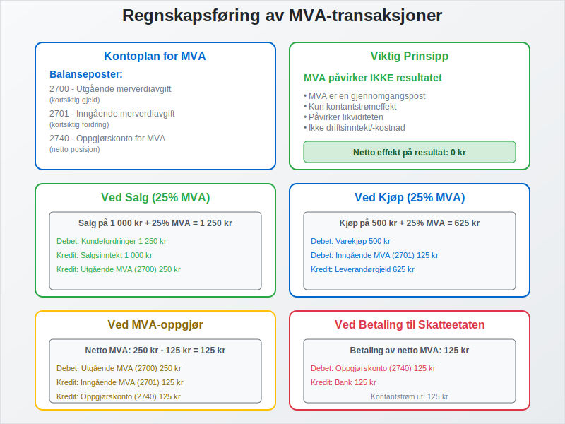
Kontroll og Sanksjoner
Skatteetatens Kontrollmyndighet
Kontrollformer:
- Skrivebordskontroll basert på innsendte oppgaver
- Stedlig kontroll på virksomhetens lokaler
- Regnskapsrevisjon med gjennomgang av alle bilag
- Tverrkontroll mot andre databaser og registre
Kontrollområder:
- MVA-beregninger og anvendelse av riktige satser
- Fradragsberegninger og dokumentasjon
- Registreringsplikt og overholdelse av frister
- Dokumentasjon og oppbevaring av bilag
- Systemkontroll av regnskaps- og kassasystemer
Vanlige Feil og Mangler
Beregningsfeil:
- Feil MVA-sats på varer og tjenester
- Feil fradragsberegning for inngående MVA
- Manglende MVA på enkelte transaksjoner
- Dobbel MVA-beregning på samme transaksjon
Registrerings- og rapporteringsfeil:
- For sen registrering ved overskridelse av grenser
- Manglende rapportering eller for sen levering
- Uriktige opplysninger i MVA-oppgaver
- Manglende dokumentasjon for fradrag
Sanksjoner og Konsekvenser
| Type Overtredelse | Sanksjon | Størrelse |
|---|---|---|
| For sen levering | Forsinkelsesgebyr | 1% per påbegynt måned |
| Uriktige opplysninger | Tilleggsavgift | 20% av beløpet |
| Grov uaktsomhet | Tilleggsavgift | 40% av beløpet |
| Forsett | Tilleggsavgift | 60% av beløpet |
| Manglende registrering | Tvangsregistrering | + tilleggsavgift |
Tilleggssanksjoner:
- Renter på utestående beløp
- Inndragning av urettmessige fordeler
- Straff ved grove overtredelser
- Konkurs ved alvorlige mislighold
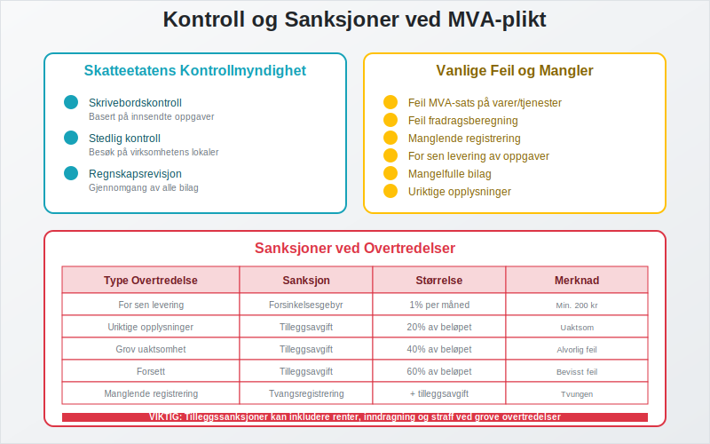
Spesielle Situasjoner og Unntak
Import og Eksport
Import til Norge:
- MVA beregnes ved innførsel (tollbehandling)
- Samme sats som ved innenlandsk salg
- Fradragsrett for importør hvis MVA-registrert
- Dokumentasjonskrav for tolldeklarasjon
Eksport fra Norge:
- 0% MVA på eksport til land utenfor EU/EØS
- Dokumentasjonskrav for å bevise eksport
- Full fradragsrett for kostnader knyttet til eksport
- Spesielle regler for tjenester til utlandet
Tjenester til Utlandet
Hovedprinsipp: Tjenester leveres der kjøper er etablert
0% MVA gjelder for:
- Konsulenttjenester til utenlandske bedrifter
- IT-tjenester og programvareutvikling
- Markedsføringstjenester rettet mot utlandet
- Fjernleverbare tjenester med spesielle regler
Unntak med norsk MVA:
- Transport innenfor Norge
- Eiendomsrelaterte tjenester i Norge
- Kultur- og underholdningstjenester i Norge
Omvendt Avgiftsplikt
Når gjelder omvendt avgiftsplikt:
- Kjøp av tjenester fra utlandet
- Import av visse varer uten tollbehandling
- Bygge- og anleggstjenester i visse tilfeller
- Handel med klimakvoter og lignende
Praktisk håndtering:
- Kjøper beregner MVA i stedet for selger
- Både utgående og inngående MVA registreres
- Netto effekt ofte null for MVA-registrerte
- Spesiell rapportering i MVA-oppgaven
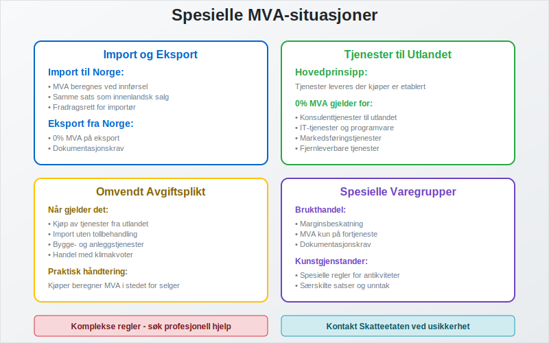
Digitalisering og Fremtidige Endringer
Teknologiske Løsninger
Moderne regnskapssystemer:
- Automatisk MVA-beregning basert på varegrupper
- Integrasjon med kassasystemer og nettbutikker
- Automatisk rapportering til Skatteetaten
- Sanntidsvalidering av MVA-beregninger
Kunstig intelligens og automatisering:
- Automatisk kategorisering av transaksjoner
- Feildeteksjon og kvalitetskontroll
- Prediktiv analyse for MVA-planlegging
- Chatbots for MVA-relaterte spørsmål
Fremtidige Regelverksendringer
Kontinuerlig rapportering:
- Sanntidsrapportering av alle transaksjoner
- Automatisk kontroll og validering
- Redusert administrativt arbeid for bedrifter
- Økt transparens og kontrollmuligheter
Digitale kvitteringer:
- Elektronisk dokumentasjon av alle kjøp
- Automatisk registrering i regnskapssystemer
- Bedre sporbarhet og kontrollmuligheter
- Miljøvennlige løsninger
Internasjonale standarder:
- Harmonisering med EU-regler
- Digitale løsninger for grensehandel
- Blockchain-teknologi for sikker dokumentasjon
- API-basert kommunikasjon mellom systemer
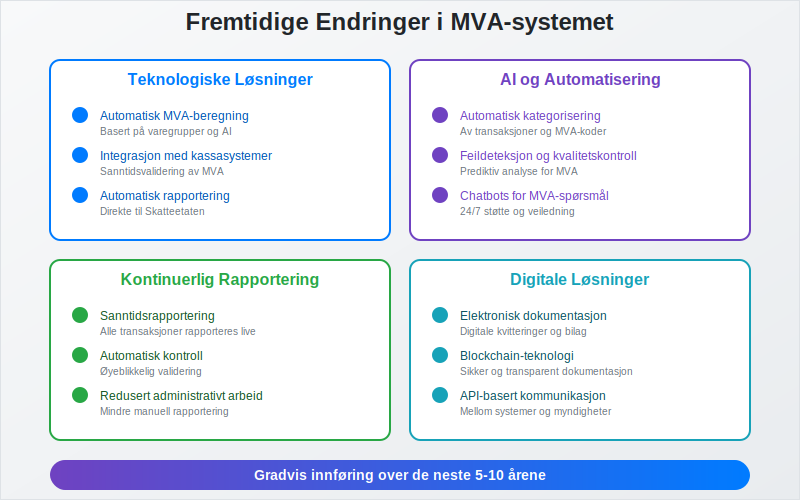
Praktiske Råd for Bedrifter
For Oppstartsbedrifter
Før oppstart:
- Vurder MVA-plikt basert på forventet omsetning
- Velg regnskapssystem med god MVA-funksjonalitet
- Planlegg prissetting med MVA inkludert
- Sett opp rutiner for MVA-håndtering fra dag én
- Få profesjonell rådgivning ved komplekse situasjoner
Ved registrering:
- Søk i god tid før omsetningsgrensen nås
- Forbered dokumentasjon som kreves for registrering
- Implementer systemer for MVA-beregning og rapportering
- Tren personale i MVA-rutiner og regelverk
- Etabler kontakt med regnskapsfører eller revisor
For Etablerte Bedrifter
Løpende optimalisering:
- Gjennomgå MVA-rutiner regelmessig
- Kontroller MVA-satser på alle produkter og tjenester
- Maksimer fradragsretten gjennom korrekt dokumentasjon
- Automatiser prosesser der det er mulig og lønnsomt
- Hold deg oppdatert på regelverksendringer
Ved endringer:
- Vurder MVA-konsekvenser ved nye produkter/tjenester
- Oppdater systemer ved regelverksendringer
- Revider rutiner ved organisasjonsendringer
- Kommuniser endringer til alle berørte medarbeidere
- Dokumenter beslutninger og vurderinger
Ved Problemer og Usikkerhet
Proaktive tiltak:
- Kontakt Skatteetaten ved usikkerhet om regler
- Søk profesjonell hjelp fra regnskapsfører eller revisor
- Korriger feil så snart de oppdages
- Dokumenter alle vurderinger og beslutninger
- Lær av feil og forbedre rutinene kontinuerlig
Ved kontroll:
- Samarbeid konstruktivt med kontrollørene
- Fremlegg dokumentasjon på en oversiktlig måte
- Forklar vurderinger og beslutninger tydelig
- Aksepter berettigede merknader og korriger feil
- Klage på vedtak du mener er feil, innen fristen
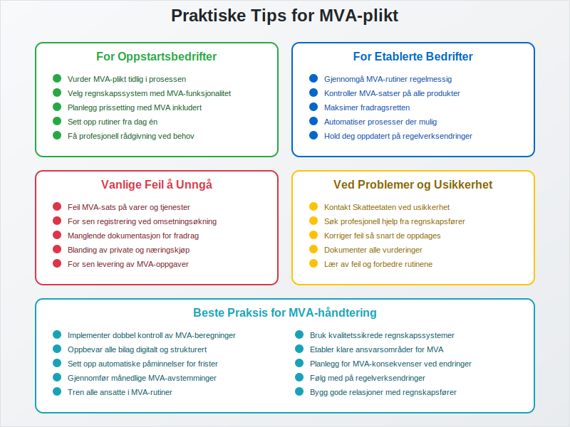
Relaterte Begreper og Artikler
For å forstå MVA-plikt fullt ut, bør du også sette deg inn i:
- Avgiftsplikt (MVA) - Detaljert om avgiftsplikten
- Regnskap - Grunnlaget for MVA-rapportering
- Faktura - Dokumentasjon av MVA-pliktige salg
- Bokføring - Registrering av MVA-transaksjoner
- Altinn - Plattform for MVA-rapportering
- Aksjeselskap - Selskapsform ofte omfattet av MVA-plikt
- Enkeltpersonforetak - Enkleste selskapsform med MVA-plikt
Oppsummering
MVA-plikt er en fundamental juridisk forpliktelse som påvirker de fleste norske bedrifter som selger varer og tjenester. Korrekt håndtering av MVA-plikten krever:
- Grundig forståelse av når plikten oppstår og hvilke krav som gjelder
- Systematisk tilnærming til registrering, beregning og rapportering
- Gode rutiner for dokumentasjon og oppbevaring av bilag
- Oppdatert kunnskap om regelverksendringer og nye krav
- Profesjonell støtte ved komplekse situasjoner og usikkerhet
Ved å etablere solide systemer og gode rutiner fra starten kan bedrifter håndtere MVA-plikten effektivt og minimere risiko for feil og sanksjoner. Dette bidrar til trygg drift og god økonomi i virksomheten.